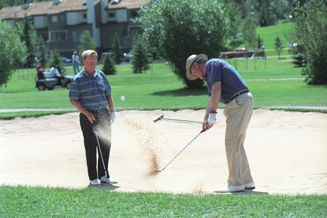

You might be asking yourelf, why would I bother paying golf. It seems like it isn't 'really a sport' or 'only for the rich'. Well, I disagree with both those remarks. Golf is an enjoyable pass time that is challenging yet rewarding. It provides an opportunity to spend 2-5 hours outside, enjoying the sunshine and gorgeous views that golf courses tend to offer. On top of that it is a social activity, often centered around time with those you enjoy. This can be taken up a notch by placing friendly wagers on the round, so potentially making a couple bucks while enjoying a Saturday. Below is a link to Golf Digest, a well known name in golf that provides articles and reviews.
Golf Digest
To begin playing golf there is sport specific equipment needed. Golf clubs are a requirement as it would be impossible to hit the golf ball without golf clubs. There is a variety of clubs on the market, ranging wildly in prices. I'm a proponent of searching the internet for what models were good a few years ago for a beginner golfer. From that list of reviews I recommend looking for a used set that will fit your needs. There is websites such as 2ndswing.com that specialize in selling used clubs. After you have purchased yourself a nice set of clubs all that is needed is golf balls and golf tees. Wal-Mart sells cheap golf balls, they typically have bags of used ones that can be purchased for 25 dollars. I'm not a big believer in spending a fortune on golf balls, for us novice players we just loose them anyways. Tees are also a good Wal-Mart purchase. The plastic tees will last forever, so stay away from wooden ones. Additional equipment is just bonus and not necessary, to include:
Now that we've decided why we should be playing golf and have an idea of the minimum equipment needed, what's next. If you have a friend that plays, ask them if they plan on playing soon, then invite yourself along. If you don't have any friends, you'll be hitting the course solo. Find a course near your residence and check out their webiste for prices. Rounds of golf vary in prices from course to course, so before you call make sure you are comfortable spending that amount. You will need to call the course and schedule a tee time for you and your group. Prior to arrival at the course (either alone or with friends) you will want to puruse through YouTube for swing tips, try this video. On the way to the course stop by a gas station and buy refreshments. If you plan on drinking beer, buy it at the gas station. Golf courses charge an arm and a leg for beers.
Arriving at the course Get to the course prior to your tee time. If you plan on hitting some range balls, try being 20 minutes early. This will give you time to check in and pay for the round and hit a bucket of balls. Personally, I prefer showing up even earlier. Gives me time to check out the bar, maybe grab some food, hit some practie puts, and a few balls on the range. It's up to each person though, I've noticed most people show up at tee time. As long as you are at the 1st tee box at tee time is what's important.
Some common vernacular that is used on the course that will help you blend in and understand what is being said.
Some common rules of the course that are good to know. When you find yourself in a sandtrap, some might say you are "at the beach". Typically cannot drive the golf cart on the grass on par 3s or within 20 feet of the greens. Keep the pace of play around a 4ish hour round of golf (18 holes). Keep pace of play up with the group in front of you too.
